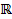
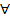
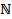

Section 1.2 Open propositions and quantifiers
In mathematics, one frequently comes across sentences that involve a variable. For example, \(x^{2} + 2x - 3 = 0\) is one such. The truth value of this statement depends on the value we assign for the variable \(x\text{.}\) For example, if \(x = 1\text{,}\) then this sentence is true, whereas if \(x = - 1\text{,}\) then the sentence is false.
Section objectives:
After completing this section, students will be able to:-
- Define open proposition.
- Explain and exemplify the difference between proposition and open proposition.
- Identify the two types of quantifiers.
- Convert open propositions into propositions using quantifiers.
- Determine the truth value of a quantified proposition.
- Convert a quantified proposition into words and vise versa.
- Explain the relationship between existential and universal quantifiers.
- Analyze quantifiers occurring in combinations.
| Definition 1.4: An open statement (also called a predicate) is a sentence that contains one or more variables and whose truth value depends on the values assigned for the variables. We represent an open statement by a capital letter followed by the variable(s) in parenthesis, e.g., \(P\left( x \right),Q\left( x \right),\ R(x,y)\) etc. |
Example 1.11: Here are some open propositions:
- \(x\) is the day before Sunday.
- \(y\) is a city in Africa.
- \(x\) is greater than \(y\text{.}\)
- \(x + 4 = - 9\text{.}\)
It is clear that each one of these examples involves variables, but is not a proposition as we cannot assign a truth value to it. However, if individuals are substituted for the variables, then each one of them is a proposition or statement. For example, we may have the following.
- Monday is the day before Sunday.
- London is a city in Africa.
- 5 is greater than 9.
- –13 + 4= –9
Remark
The collection of all allowable values for the variable in an open sentence is called the universal set (the universe of discourse) and denoted by \(\mathbf{U}\text{.}\)
|
Definition 1.5: Two open proposition \(P(x)\) and \(Q(x)\) are said to be equivalent if and only if
\(P\left( a \right) = Q(a)\) for all individual \(a\text{.}\) Note that if the universe \(U\) is specified, then \(P(x)\) and \(Q(x)\) are equivalent if and only if \(P\left( a \right) = Q(a)\) for all \(a \in U\text{.}\)
|
Example 1.12: Let \(P\left( x \right):x^{2} - 1 = 0\text{.}\)
\(Q\left( x \right):\left| x \right| \geq 1\text{.}\)
Let \(U = \{ - 1, - \frac{1}{2},0,1\}\text{.}\)
Then for all \(a \in U\text{;}\) \(P\left( a \right)\) and \(Q(a)\) have the same truth value.
\(P\left( - 1 \right):{( - 1)}^{2} - 1 = 0\) (\(T\)) \(Q\left( - 1 \right):\left| - 1 \right| \geq 1\) (\(T\))
\(P\left( - \frac{1}{2} \right):{( - \frac{1}{2})}^{2} - 1 = 0\) (\(F\)) \(Q\left( - \frac{1}{2} \right):\left| - \frac{1}{2} \right| \geq 1\) (\(F\))
\(P\left( 0 \right):0 - 1 = 0\) (\(F\)) \(Q\left( 0 \right):\left| 0 \right| \geq 1\) (\(F\))
\(P\left( 1 \right):1 - 1 = 0\) (\(T\)) \(Q\left( 1 \right):\left| 1 \right| \geq 1\) (\(T\))
Therefore \(P\left( a \right) = Q(a)\) for all \(a \in U\text{.}\)
| Definition 1.6: Let \(U\) be the universal set. An open proposition \(P\left( x \right)\) is a tautology if and only if \(P\left( a \right)\) is always true for all values of \(a \in U\text{.}\) |
Example 1.13: The open proposition \(P\left( x \right):x^{2} \geq 0\) is a tautology.
As we have observed in example 1.11, an open proposition can be converted into a proposition by substituting the individuals for the variables. However, there are other ways that an open proposition can be converted into a proposition, namely by a method called quantification. Let \(P(x)\) be an open proposition over the domain \(S\text{.}\) Adding the phrase “For every \(x \in S\)” to \(P(x)\) or “For some \(x \in S\)” to \(P(x)\) produces a statement called a quantified statement.
Consider the following open propositions with universe

.- \(R\left( x \right):x^{2} \geq 0\) .
- \(P\left( x \right):\left( x + 2 \right)\left( x - 3 \right) = 0\text{.}\)
- \(Q(x):x^{2} < 0\text{.}\)
Then \(R\left( x \right)\) is always true for each \(x\mathbb{\in R}\text{,}\)
\(P(x)\) is true only for \(x = - 2\) and \(x = 3\text{,}\)
\(Q(x)\) is always false for all values of \(x\mathbb{\in R}\text{.}\)
Hence, given an open proposition \(P(x)\text{,}\) with universe \(U\text{,}\) we observe that there are three possibilities.
- \(P(x)\) is true for all \(x \in U\text{.}\)
- \(P\left( x \right)\) is true for some \(x \in U\text{.}\)
- \(P(x)\) is false for all \(x \in U\text{.}\)
Now we proceed to study open propositions which are satisfied by “all” and “some” members of the given universe.
|
Remarks:
- To show that \(\left( \forall x \right)P(x)\) is \(F\text{,}\) it is sufficient to find at least one \(a \in U\) such that \(P(a)\) is \(F\text{.}\) Such an element \(a \in U\) is called a counter example.
- \(\left( \exists x \right)P(x)\) is \(F\) if we cannot find any \(a \in U\) having the property \(P\text{.}\)
Example 1.14:
- Write the following statements using quantifiers.
- For each real number \(x > 0,x^{2} + x - 6 = 0\text{.}\)
Solution: \(\left( \forall x > 0 \right)(x^{2} + x - 6 = 0)\text{.}\)
- There is a real number \(x > 0\) such that \(x^{2} + x - 6 = 0\text{.}\)
Solution: \(\left( \exists x > 0 \right)(x^{2} + x - 6 = 0)\text{.}\)
- The square of any real number is nonnegative.
Solution: \(\left( \forall x\mathbb{\in R} \right)(x^{2} \geq 0)\text{.}\)
- Let \(P\left( x \right):x^{2} + 1 \geq 0\text{.}\) The truth value for \(\left( \forall x \right)P(x)\) [i.e \(\left( \forall x \right)(x^{2} + 1 \geq 0)\)] is \(T\text{.}\)
- Let \(P\left( x \right):x < x^{2}\text{.}\) The truth value for \(\left( \forall x \right)(x < x^{2})\) is \(F\text{.}\) \(x = \frac{1}{2}\) is a counterexample since \(\frac{1}{2}\mathbb{\in R}\) but \(\frac{1}{2} < \frac{1}{4}\text{.}\) On the other hand, \(\left( \exists x \right)P(x)\) is true, since \(- 1 \in \mathbb{R}\) such that \(- 1 < 1\text{.}\)
- Let \(P\left( x \right):\left| x \right| = - 1\text{.}\) The truth value for \(\left( \exists x \right)P(x)\) is \(F\) since there is no real number whose absolute value is \(- 1\text{.}\)
Relationship between the existential and universal quantifiers
If \(P\left( x \right)\) is a formula in \(x\text{,}\) consider the following four statements.
- \(\left( \forall x \right)P\left( x \right)\text{.}\)
- \(\left( \exists x \right)P(x)\text{.}\)
- \(\left( \forall x \right)\text{ℸP}\left( x \right)\)\(\left( \forall x \right)\neg P\left( x \right)\text{.}\)
- \(\left( \exists x \right)\daleth P(x)\)\(\left( \exists x \right)\neg P(x)\text{.}\)
We might translate these into words as follows.
- Everything has property \(P\text{.}\)
- Something has property \(P\text{.}\)
- Nothing has property \(P\text{.}\)
- Something does not have property \(P\text{.}\)
Now (d) is the denial of (a), and (c) is the denial of (b), on the basis of everyday meaning. Thus, for example, the existential quantifier may be defined in terms of the universal quantifier.
Now we proceed to discuss the negation of quantifiers. Let \(P\left( x \right)\) be an open proposition. Then \(\left( \forall x \right)P\left( x \right)\) is false only if we can find an individual “\(a\)” in the universe such that \(P\left( a \right)\) is false. If we succeed in getting such an individual, then \(\left( \exists x \right)\neg P(x)\) is true. Hence \(\left( \forall x \right)P\left( x \right)\) will be false if \(\left( \exists x \right)\neg P(x)\) is true. Therefore the negation of \(\left( \forall x \right)P\left( x \right)\) is \(\left( \exists x \right)\neg P(x)\text{.}\) Hence we conclude that
\(\neg\left( \forall x \right)P\left( x \right) \equiv \left( \exists x \right)\neg P(x)\text{.}\)
Similarly, we can easily verified that
\(\neg\left( \exists x \right)P\left( x \right) \equiv \left( \forall x \right)\neg P(x)\text{.}\)
Remark: To negate a statement that involves the quantifiers

and , change each to , change each to , and negate the open statement.Example 1.15:
Let \(U\mathbb{= R}\text{.}\)
- \(\displaystyle \neg\left( \exists x \right)\left( x < x^{2} \right) \equiv \left( \forall x \right)\neg(x < x^{2})\)
\(\equiv \left( \forall x \right)(x \geq x^{2})\text{.}\)
- \(\displaystyle \neg\left( \forall x \right)(4x + 1 = 0) \equiv \left( \exists x \right)\neg(4x + 1 = 0)\)
\(\equiv \left( \exists x \right)(4x + 1 \neq 0)\text{.}\)
Given propositions containing quantifiers we can form a compound proposition by joining them with connectives in the same way we form a compound proposition without quantifiers. For example, if we have \(\left( \forall x \right)P\left( x \right)\) and \(\left( \exists x \right)Q(x)\) we can form \(\left( \forall x \right)P\left( x \right) \Longleftrightarrow \left( \exists x \right)Q(x)\text{.}\)
Consider the following statements involving quantifiers. Illustrations of these along with translations appear below.
- All rationals are reals. \(\left( \forall x \right)\mathbb{(Q(}x) \Longrightarrow \mathbb{R(}x))\text{.}\)
- No rationals are reals. \(\left( \forall x \right)\mathbb{(Q(}x) \Longrightarrow \neg\mathbb{R(}x))\text{.}\)
- Some rationals are reals. \(\left( \exists x \right)\mathbb{(Q(}x\mathbb{) \land R(}x))\text{.}\)
- Some rationals are not reals. \(\left( \exists x \right)\mathbb{(Q(}x) \land \neg\mathbb{R(}x))\text{.}\)
Example 1.16:
Let \(U =\) The set of integers.
Let \(P\left( x \right)\text{:}\) \(x\) is a prime number.
\(Q\left( x \right)\text{:}\) \(x\) is an even number.
\(R\left( x \right)\text{:}\) \(x\) is an odd number.
Then
- \(\left( \exists x \right)\lbrack P(x) \Longrightarrow Q(x)\rbrack\) is \(T\text{;}\) since there is an \(x\text{,}\) say 2, such that \(P(2) \Longrightarrow Q(2)\) is \(T\text{.}\)
- \(\left( \forall x \right)\lbrack P(x) \Longrightarrow Q(x)\rbrack\) is \(F\text{.}\) As a counterexample take 7. Then \(P(7)\) is \(T\) and \(Q(7)\) is \(F\text{.}\) Hence \(P(7) \Longrightarrow Q(7)\text{.}\)
- \(\left( \forall x \right)\lbrack R(x) \land P(x)\rbrack\) is \(F\text{.}\)
- \(\left( \forall x \right)\lbrack(R\left( x \right) \land P\left( x \right)) \Longrightarrow Q(x)\rbrack\) is \(F\text{.}\)
Quantifiers Occurring in Combinations
So far, we have only considered cases in which universal and existential quantifiers appear simply. However, if we consider cases in which universal and existential quantifiers occur in combination, we are lead to essentially new logical structures. The following are the simplest forms of combinations:
- \(\displaystyle \left( \forall x \right)\left( \forall y \right)P(x,y)\)
“for all \(x\) and for all \(y\) the relation \(P(x,y)\) holds”;
- \(\displaystyle \left( \exists x \right)\left( \exists y \right)P(x,y)\)
“there is an \(x\) and there is a \(y\) for which \(P(x,y)\) holds”;
- \(\displaystyle \left( \forall x \right)\left( \exists y \right)P(x,y)\)
“for every \(x\) there is a \(y\) such that \(P(x,y)\) holds”;
- \(\displaystyle \left( \exists x \right)\left( \forall y \right)P\left( x,y \right)\)
“there is an \(x\) which stands to every \(y\) in the relation \(P(x,y)\text{.}\)”
Example 1.17:
Let \(U\ =\) The set of integers.
Let \(P(x,\ y):\ x\ + \ y\ = \ 5\text{.}\)
- \((\exists x)\ (\exists y)\ P(x,\ y)\) means that there is an integer \(x\) and there is an integer \(y\) such that \(x\ + \ y\ = \ 5\text{.}\) This statement is true when \(x\ = \ 4\) and \(y\ = \ 1\text{,}\) since 4 + 1 = 5. Therefore, the statement \((\exists x)\ (\exists y)\ P(x,\ y)\) is always true for this universe. There are other choices of \(x\) and \(y\) for which it would be true, but the symbolic statement merely says that there is at least one choice for \(x\) and \(y\) which will make the statement true, and we have demonstrated one such choice.
- \((\exists x)\ (\forall y)\ P(x,\ y)\) means that there is an integer \(x_{0}\) such that for every \(y\text{,}\) \(x_{0}\ + \ y\ = \ 5\text{.}\) This is false since no fixed value of \(x_{0}\) will make this true for all \(y\) in the universe; e.g. if \(x_{0}\ = \ 1\text{,}\) then \(1\ + \ y\ = \ 5\) is false for some \(y\text{.}\)
- \((\forall x)\ (\exists y)\ P(x,\ y)\) means that for every integer \(x\text{,}\) there is an integer \(y\) such that
\(x\ + \ y\ = \ 5\text{.}\) Let \(x\ = \ a\text{,}\) then \(y\ = \ 5 - a\) will always be an integer, so this is a true statement.
- \((\forall x)\ (\forall y)\ P(x,\ y)\) means that for every integer \(x\) and for every integer \(y\text{,}\) \(x\ + \ y\ = \ 5\text{.}\) This is false, for if \(x\ = \ 2\) and \(y = 7\text{,}\) we get \(2 + 7 = 9 \neq 5\text{.}\)
Example 1.18:
- Consider the statement
For every two real numbers \(x\) and \(y\text{,}\)\(x^{2} + y^{2} \geq 0\text{.}\)
If we let
\(P\left( x,y \right):x^{2} + y^{2} \geq 0\)
where the domain of both \(x\) and \(y\) is , the statement can be expressed as
\(\left( \forall x\mathbb{\in R} \right)\left( \forall y\mathbb{\in R} \right)P(x,y)\) or as \(\left( \forall x\mathbb{\in R} \right)\left( \forall y\mathbb{\in R} \right)(x^{2} + y^{2} \geq 0)\text{.}\)
Since \(x^{2} \geq 0\) and \(y^{2} \geq 0\) for all real numbers \(x\) and \(y\text{,}\) it follows that \(x^{2} + y^{2} \geq 0\) and so \(P(x,y)\) is true for all real numbers \(x\) and \(y\text{.}\) Thus the quantified statement is true.
- Consider the open statement
\begin{equation*}
P\left( x,y \right):\left| x - 1 \right| + \left| y - 2 \right| \leq 2
\end{equation*}
where the domain of the variable \(x\) is the set \(E\) of even integers and the domain of the variable \(y\) is the set \(O\) of odd integers. Then the quantified statement
\begin{equation*}
\left( \exists x \in E \right)\left( \exists y \in O \right)P(x,y)
\end{equation*}
can be expressed in words as
There exist an even integer \(x\) and an odd integer \(y\) such that \(\left| x - 1 \right| + \left| y - 2 \right| \leq 2\text{.}\)
Since \(P\left( 2,3 \right):1 + 1 \leq 2\) is true, the quantified statement is true.
- Consider the open statement
\begin{equation*}
P\left( x,y \right):xy = 1
\end{equation*}
where the domain of both \(x\) and \(y\) is the set \(\mathbb{Q}^{+}\) of positive rational numbers. Then the quantified statement
\begin{equation*}
\left( \forall x \in \mathbb{Q}^{+} \right)\left( \exists y \in \mathbb{Q}^{+} \right)P(x,y)
\end{equation*}
can be expressed in words as
For every positive rational number \(x\text{,}\) there exists a positive rational number \(y\) such that \(xy = 1\text{.}\)
It turns out that the quantified statement is true. If we replace \(\mathbb{Q}^{+}\) by , then we have
\(\left( \forall x\mathbb{\in R} \right)\left( \exists y\mathbb{\in R} \right)P(x,y)\) .
Since \(x = 0\) and for every real number \(y,xy = 0 \neq 1\text{,}\) \(\left( \forall x\mathbb{\in R} \right)\left( \exists y\mathbb{\in R} \right)P(x,y)\) is false.
- Consider the open statement
\(P\left( x,y \right):xy\) is odd
where the domain of both \(x\) and \(y\) is the set

of natural numbers. Then the quantified statement\(\left( \exists x\mathbb{\in N} \right)\left( \forall y\mathbb{\in N} \right)P\left( x,y \right)\text{,}\)
expressed in words, is
There exists a natural number \(x\) such that for every natural numbers \(y\text{,}\) \(\text{xy}\) is odd. The statement is false.
In general, from the meaning of the universal quantifier it follows that in an expression \(\left( \forall x \right)\left( \forall y \right)P(x,y)\) the two universal quantifiers may be interchanged without altering the sense of the sentence. This also holds for the existential quantifies in an expression such as \(\left( \exists x \right)\left( \exists y \right)P(x,y)\text{.}\)
In the statement \(\left( \forall x \right)\left( \exists y \right)P(x,y)\) , the choice of \(y\) is allowed to depend on \(x\) - the \(y\) that works for one \(x\) need not work for another \(x\text{.}\) On the other hand, in the statement \(\left( \exists y \right)\left( \forall x \right)P(x,y)\text{,}\) the \(y\) must work for all \(x\text{,}\) i.e., \(y\) is independent of \(x\text{.}\) For example, the expression \(\left( \forall x \right)\left( \exists y \right)(x < y)\text{,}\) where \(x\) and \(y\) are variables referring to the domain of real numbers, constitutes a true proposition, namely, “For every number \(x\text{,}\) there is a number \(y\text{,}\) such that \(x\) is less that \(y\text{,}\)” i.e., “given any number, there is a greater number.” However, if the order of the symbol \(\left( \forall x \right)\) and \(\left( \exists y \right)\) is changed, in this case, we obtain: \(\left( \exists y \right)\left( \forall x \right)(x < y)\text{,}\) which is a false proposition, namely, “There is a number which is greater than every number.” By transposing \(\left( \forall x \right)\) and \(\left( \exists y \right)\text{,}\) therefore, we get a different statement.
The logical situation here is:
\(\left( \exists y \right)\left( \forall x \right)P(x,y) \Longrightarrow \left( \forall x \right)\left( \exists y \right)P(x,y)\text{.}\)
Finally, we conclude this section with the remark that there are no mechanical rules for translating sentences from English into the logical notation which has been introduced. In every case one must first decide on the meaning of the English sentence and then attempt to convey that same meaning in terms of predicates, quantifiers, and, possibly, individual constants.
Exercises
|
For every \(x \in A\) and \(y \in A\text{,}\) \(xy - 2\) is prime.
where the domain of the variables \(x\) and \(y\) is \(A = \{ 3,5,11\}\text{.}\)
|
|---|